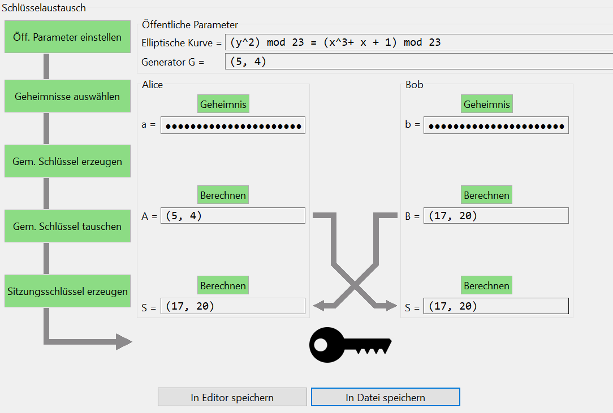

Der Diffie-Hellman-Schlüsselaustausch ist ein Protokoll, dass zwei Partien ermöglicht, einen geteilten geheimen Schlüssel über eine ungesicherte Leitung zu vereinbaren.
Das Protokoll beruht auf mathematischen Funktionen, sowie multiplakativen Gruppen von ganzen Zahlen mod p oder elliptischen Kurven. In diesem Beispiel werden elliptische Kurven benutzt.
Schritt 1. Das Etablieren von öffentlichen Parametern
Alice und Bob einigen sich auf eine elliptische Kurve und einen Generator G, welcher ein Punkt auf der Kurve ist.
Schritt 2. Das Erstellen von privaten Schlüsseln
Alice und Bob suchen sich beide einen privaten Schlüssel d aus, den sie geheim halten.
Schritt 3. Das Erstellen von öffentlichen Schlüsseln
Alice und Bob multiplizieren jetzt G mit ihrem privaten Schlüssel (Skalarmultiplikation).
Schritt 4. Der Austausch der öffentlichen Schlüssel
Alice und Bob teilen nun jeweils ihren öffentlichen Schlüssel miteinander.
Schritt 5. Das Erstellen eines Sitzungsschlüssels
Alice und Bob multiplizieren nun jeweils den öffentlichen Schlüssel des Anderen mit ihrem eigenem geheimen Schlüssel.
Der Sitzungsschlüssel ist der X-Wert des berechneten Schlüsselpunkts.
Für das sichere Anwenden elliptischer Kurven in der Kryptographie müssen bestimmte Vorrausetzungen gegeben sein.
In dieser Demonstration können auch kleine elliptische Kurven verwendet werden. Diese Form der Berechnung ist für den echten Schlüsselaustausch ungeeignet,
da kleine elliptische Kurven den Voraussetzungen nicht entsprechen. Die Voraussetzungen an elliptische Kurven können nachgeschlagen werden,
zum Beispiel in "SEC 1: Elliptic Curve Cryptography" from Certicom Research (Hier herunterzuladen).
| \(E(\mathbb{F} _{p})\) | die Kurve selbst. Eine elliptische Kurve ist eine mathematische Gruppe. |
| \(N\) | die Größe von \(E(\mathbb{F} _{p})\). Dieser Wert wird auch als Ordnung oder Kardinalität bezeichnet und so notiert: \(|E(\mathbb{F} _{p})|\). |
| \(t\) | das gewünschte Sicherheitslevel in Bits. \(t\) kann einer der folgenden Werte sein \(\{56, 64, 80, 96, 112, 128, 192, 256\} \). |
| \(p\) | ist eine Primzahl, sodass \(\log_2(p) = \begin{cases} 2t \quad & \textrm{wenn} \; t \neq 256 \\ 521 & \textrm{wenn} \; t = 256 \end{cases} \) |
| \(G\) | ein Punkt auf der Kurve, der als Basis dient. \(G\) muss so gewählt werden, dass seine Ordnung \(n\) eine Primzahl ist: \(\textrm{ord}\,(G) \in \mathbb{P}\). |
| \(n\) | die Ordnung von \(G\). Muss eine Primzahl sein. |
| \(h\) | der Kofaktor: \(h = \frac{N}{n}\) (order of group divided by order of \(G\)). |
Für diese Parameter gibt es weitere Bedingungen
| \(E(\mathbb{F} _{2^m})\) | die Kurve selbst. Eine elliptische Kurve ist eine mathematische Gruppe. |
| \(N\) | die Größe von \(E(\mathbb{F} _{2^m})\). Dieser Wert wird auch als Ordnung oder Kardinalität bezeichnet und so notiert: \(|E(\mathbb{F} _{2^m})|\). |
| \(t\) | das gewünschte Sicherheitslevel in Bits. \(t\) kann einer der folgenden Werte sein \(\{56, 64, 80, 96, 112, 128, 192, 256\} \) |
| \(t'\) | die kleinste ganze Zahl in der Menge \(\{64, 80, 96, 112, 128, 192, 256, 512\}\) die größer als \(t\) ist. |
| \(m\) | eine ganze Zahl aus der Menge \(\{113, 131, 163, 193, 233, 239, 283, 409, 571\}\) sodass gilt \(2t < m < 2t'\) |
| \(f(x)\) | ein irreduzibles Polynom, welches als Generator für \(\mathbb{F} _{2^m}\) genutzt wird. |
| \(G\) | ein Punkt auf der Kurve, der als Basis dient. \(G\) muss so gewählt werden, dass seine Ordnung \(n\) eine Primzahl ist: \(\textrm{ord}\,(G) \in \mathbb{P}\). |
| \(n\) | die Ordnung von \(G\). Muss eine Primzahl sein. |
| \(h\) | der Kofaktor: \(h = \frac{N}{n}\) (order of group divided by order of \(G\)). |
Für diese Parameter gibt es weitere Bedingungen
Die Visualisierung (das Plugin) veranschaulicht den Austausch eines öffentlichen Schlüssels zwischen Alice und Bob durch den Diffie-Hellman Schlüsselaustausch über elliptische Kurven. Das Protokoll kann mit kleinen oder großen elliptischen Kurven ausgeführt werden.
Um mit der Visualisierung des Schhlüsselaustauschs zu beginnen, drücken Sie links im Plugin auf die Schaltfläche "Öff. Parameter einstellen". In dem sich dann öffnenden Dialog können Sie eine elliptische Kurve, und einen Generatorpunkt G auswählen.
Mit einem Klick auf "Fertigstellen" werden die Parameter übernommen und erscheinen in der Gruppe "Öffentliche Parameter".
Nachdem ein Schritt des Schlüsselaustauschs abgeschlossen wurde, färbt sich die entsprechende Schaltfläche grün.
Jetzt können die nächsten Schritte des Schlüsselaustauschs gemacht werden. Zunächst müssen Alice und Bob jeweils ein Geheimnis wählen. Dann berechnen sie die gemeinsamen Schlüssel A und B, welche anschließend auf einem öffentlichen (unsicheren) Kanal getauscht werden. Abschließend berechnen sie, wie in der Erläuterung des Protokolls beschrieben, ihren gemeinsamen Sitzungsschlüssel.
Beim Austausch der gemeinsamen Schlüssel wird eine Animation angezeigt. Diese kann zu Problemen mit dem Plugin führen. Die Animation kann über das grüne Icon in der Menubar in der rechten oberen Ecke des Plugins deaktiviert werden.
Wenn alle Schritte abgeschlossen sind und Alice und Bob erfolgreich einen Sitzungsschlüssel etabliert haben, erscheint ein Schlüssel unten im Fenster.
Nach Abschluss aller Schritte erscheinen unter dem Schlüssel die zwei Buttons "In Editor speichern" und "In Datei speichern". Der Button "In Editor speichern" öffnet einen neuen Editor und zeigt die Ergebnisse des Schlüsselaustauschs darin an. Der Button "In Datei speichern" erlaubt es, die Ergebnisse in einer Datei zu speichern. Dazu öffnet sich ein "Speichern unter" Dialog. Dort können Sie eine Datei auswählen, in der die Ergebnisse gespeichert werden sollen.

Um erneut zu Beginnen drücken Sie das „Zurücksetzen“ Ikon oben rechts in der Menubar. Dieser setzt alle Einstellungen zurück.
Für mehr Information zu Berechnungen mit elliptischen Kurven, besuchen Sie "Demonstration of point addition over elliptic curves (EC)" or https://de.wikipedia.org/wiki/Elliptische_Kurve.